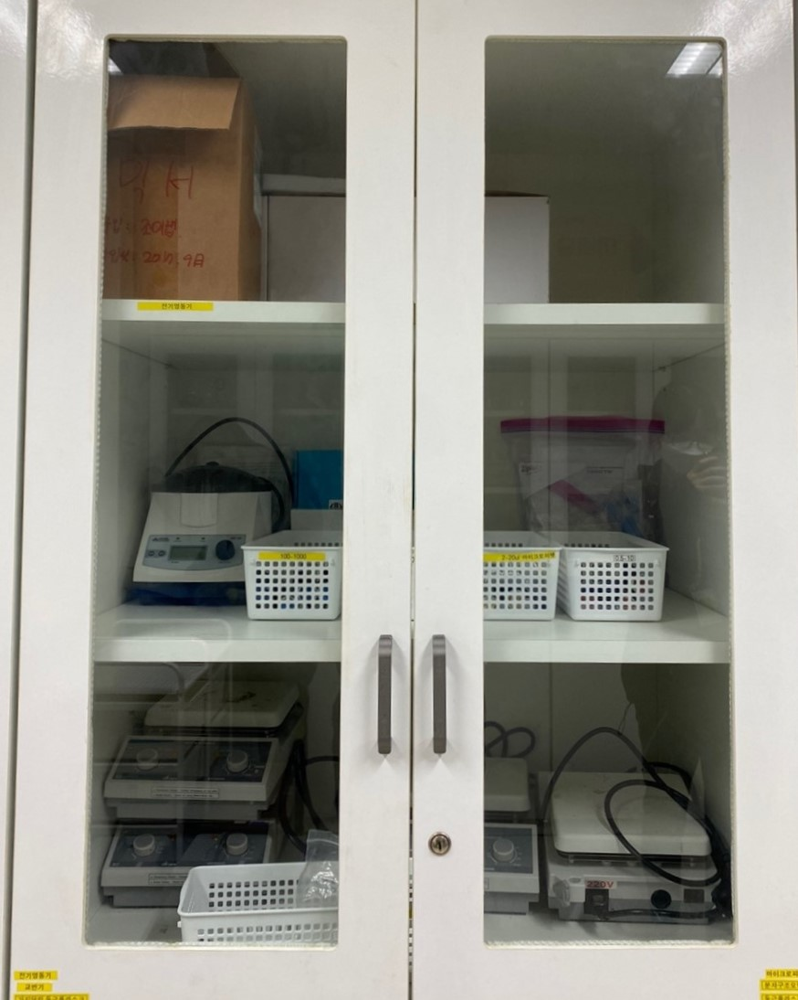
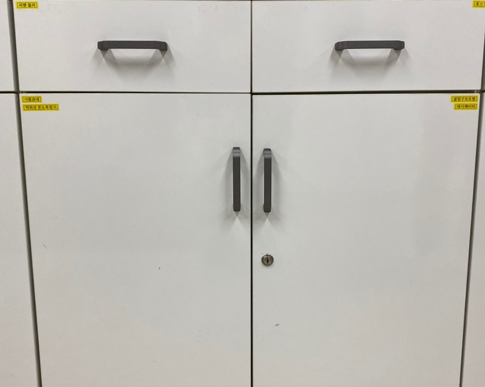

7번 서랍
|  | ①전기연동기 : 전기 조작 기능을 제어하기 위해 설계한 장치 ②교반기 : 열을 고루 잘 퍼지게 하거나, 재료를 잘 뒤섞기 위하여 휘젓는 기구나 기계 ③가지 달린 둥근플라스크 : 둥근바닥 플라스크에 가지가 달린 형태의 플라스크임. 시험관에서 발생된 기체를 가지를 통해 모아서 시험관에 담겨져 있는 시료의 특징을 알아내는 데에 쓰임 ④피펫 : 일정 체적의 액체 또는 기체를 측정하거나, 다른 용기에 추가하거나 할 수 있는 기구 ⑤마이크로 피펫 : 미세한 양의 액체를 옮기기 위해 사용되는 기구 ⑥분자구조모형 : 분자를 나타내는 구조적 모형으로 분자를 구성하는 원자들의 위치, 종류, 이들 간의 화학결합의 유무와 종류를 나타냄. 물리적 실체로서 분자의 모양에 대한 시각적인 이해를 돕기 때문에 교육적으로 많이 활용됨 ⑦둥근플라스크: 바닥 모양이 둥근 플라스크 ⑧분별깔대기 : 여러 성분이 섞여 있는 임의의 용액 속에서 원하는 물질을 추출할 때 사용하는 도구로, 성분을 포함한 용액과 섞이지 않으면서 원하는 물질을 잘 녹이는 용매를 이용하여 원하는 물질을 추출할 때 사용됨 |
|  | ①피펫 필러 : 홀 피펫이나 눈금 피펫에 끼워서 시약을 옮기기 위한 기구로, 피펫 필러 없이 피펫을 사용하게 되면 직접 액체를 마시거나 증기를 흡입할 수 있기 때문에 사용됨ㅤㅤㅤㅤㅤㅤㅤㅤㅤㅤㅤㅤㅤㅤㅤㅤㅤㅤㅤㅤㅤㅤㅤㅤㅤㅤㅤㅤㅤㅤㅤㅤㅤㅤㅤㅤㅤㅤㅤㅤㅤㅤㅤㅤㅤㅤㅤㅤㅤㅤㅤㅤㅤㅤㅤㅤㅤㅤㅤㅤㅤㅤㅤㅤㅤㅤㅤㅤㅤㅤㅤㅤㅤㅤㅤㅤㅤㅤㅤㅤ ②호스 |
①시험관대 : 시험관이 쓰러지지 않도록 고정시켜주는 틀 ②적외선 온도 측정기 : 손이 닿지 않는 곳을 측정할 때 주로 쓰이는 온도계. ③결정 구조 모형 : 결정 형태의 다면체를 나타내기 위해 만든 입체 모형 ④데시케이터 : 고체 또는 액체의 건조제를 사용하여 고체 또는 액체 시료를 건조, 저장하는 데 사용되는 두꺼운 유리제 그릇ㅤㅤㅤㅤㅤㅤㅤㅤㅤㅤㅤㅤㅤㅤㅤㅤㅤㅤㅤㅤㅤㅤㅤㅤㅤㅤㅤㅤㅤㅤㅤㅤㅤㅤㅤㅤㅤㅤㅤㅤㅤㅤㅤ |